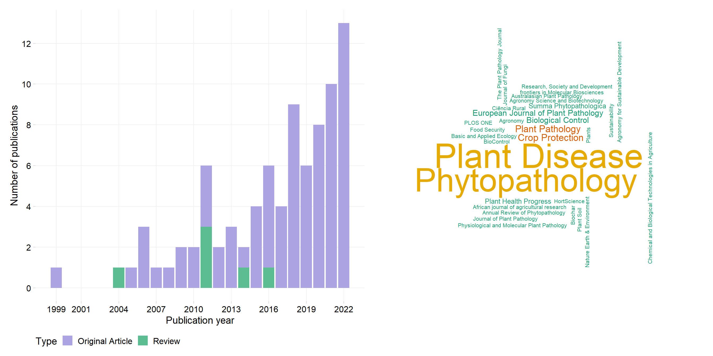
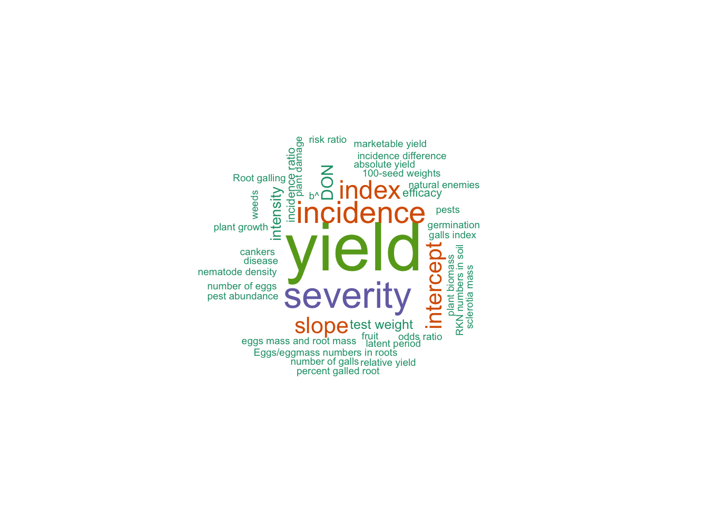

Meta-analysis in Plant Pathology
dat <- gsheet2tbl("https://docs.google.com/spreadsheets/d/1vYXB1Ag-ouLgo9nLIelP1V0hz-ki0f7p-aOCAkmuxKI/edit#gid=1058316481")
theme_set(theme_minimal_grid())Journals
tab2 <- dat %>%
dplyr::select(journal) %>%
tabyl(journal) %>%
select(-percent)
wordcloud(words = tab2$journal, freq = tab2$n, min.freq = 1, max.words=200, random.order=FALSE, rot.per=0.25, colors=brewer.pal(8, "Dark2"))Pubs by year and type
p1 <- dat %>%
tabyl(pub_year, article_type) %>%
pivot_longer(names_to = "Type",
values_to = "n", 2:3) %>%
ggplot(aes(pub_year, n, fill = Type))+
geom_col()+
theme(legend.position = "bottom",
panel.grid.major=element_line(colour="grey94"))+
scale_fill_discrete_qualitative(palette = "cold")+
scale_y_continuous(n.breaks = 10)+
labs( x = "Publication year", y = "Number of publications")By Source type
p2 <- dat %>%
filter(article_type == "Original Article") %>%
tabyl(data_source) %>%
ggplot(aes(reorder(data_source, -n), n, fill = n))+
geom_col(fill = "#ACA4E2", width = 0.56)+
geom_text(
aes(x = data_source, y = n, label = n),
position = position_dodge(width = 1),
vjust = -0.5, size = 4) +
theme(legend.position = "bottom",
panel.grid.major=element_line(colour="grey94"))+
scale_y_continuous(breaks = c(0, 3, 6, 9, 12, 15, 18, 21, 24, 27, 30))+
labs(x = "", y = "Number of original articles")Figure 1: year and source
(p1 / p2) +
plot_annotation(tag_levels = "A")
ggsave("figs/figure11.png", width = 7, height =10, bg = "white")By objective and product type
objective <- dat %>%
filter(article_type == "Original Article") %>%
tabyl(objective) |>
select(-percent)
type <- dat %>%
filter(article_type == "Original Article") %>%
filter(objective == "Product effects") %>%
tabyl(product_type) |>
select(-percent)
cbind(objective, type) objective n product_type n
1 Dis-toxin relationship 2 Bactericides 1
2 Epidemic parameter 1 BCAs 11
3 Host effects 1 Disinfestant 3
4 Management effects 8 Fertilizer 1
5 Monocyclic component 1 Fungicide 38
6 Product and host effects 1 Fungicide+BCAs 1
7 Product effects 57 Nematicide 1
8 Yld-Dis relationship 7 Sprayers and adjuvants 1Number of trials/studey per article
summary(dat$n_trials_total) Min. 1st Qu. Median Mean 3rd Qu. Max. NA's
10.00 42.75 72.00 107.22 138.25 879.00 6 Effect sizes
dat %>%
dplyr::select(effect_size_1, effect_size_2, effect_size_3) %>%
pivot_longer(names_to = "type", values_to = "value", 1:3) %>%
select(value) %>%
filter(value != "NA") %>%
tabyl(value) |>
adorn_totals() value n percent
BPL b 1 0.007352941
Cohen's d 1 0.007352941
Hedges' g 3 0.022058824
incidence ratio 3 0.022058824
log means 25 0.183823529
log of d 1 0.007352941
log ratio 38 0.279411765
mean diff 10 0.073529412
means 51 0.375000000
odds ratio 3 0.022058824
Total 136 1.000000000Response variables
tab <- dat %>%
dplyr::select(response1 , response2, response3, response4) %>%
pivot_longer(names_to = "type", values_to = "Variable", 1:4) %>%
select(Variable) %>%
filter(Variable != "NA") %>%
tabyl(Variable) %>%
select(-percent)
tab Variable n
100-seed weights 1
absolute yield 1
b^ 1
cankers 1
disease 1
DON 5
efficacy 2
eggs mass and root mass 1
Eggs/eggmass numbers in roots 1
fruit 1
galls index 1
germination 1
incidence 14
incidence difference 1
incidence ratio 2
index 11
intensity 4
intercept 9
latent period 1
marketable yield 1
natural enemies 1
nematode density 1
number of eggs 1
number of galls 1
odds ratio 1
percent galled root 1
pest abundance 1
pests 1
plant biomass 1
plant damage 1
plant growth 1
relative yield 1
risk ratio 1
RKN numbers in soil 1
Root galling 1
sclerotia mass 1
severity 18
slope 9
test weight 3
weeds 1
yield 37library(wordcloud)
wordcloud(words = tab$Variable, freq = tab$n, min.freq = 1, max.words=200, random.order=FALSE, rot.per=0.25, colors=brewer.pal(5, "Dark2"))